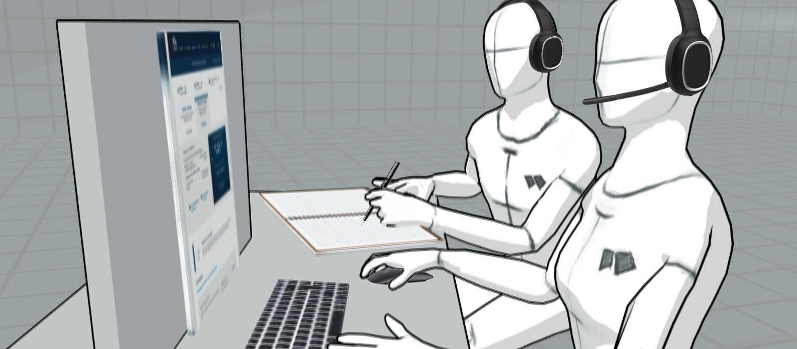

USAA Auto Quote Redesign


Overview
Auto Insurance is USAA's fl screen was due for an overhaul. It was implemented in 2015 I helped redesign USAA's Auto Insurance Acquistion application in 2015. The effort was a multi-year journey Initially we aimed to bring the web experience to iOS, but discovered student confusion to be a high priority in addition to parity. Part of this initiative meant rethinking how RaiseMe communicates important scholarship earning requirements for iOS.
On USAA’s Auto Acquisition Quote Results screen, users were having trouble performing critical tasks such as viewing bundling options, editing insurance coverages, and understanding how to buy the policy.
We aimed to build a solution that would be easy to understand, provide valuable relevant content, and drive users to the next steps of the process. We wanted a visually appealing design that would be “future-proof” with the mindset of being able to test, learn and adapt.
My Role
I led a team which included two other Designers and one Producer. Faciliitating the Design deliverables, I worked closely with my Auto Product Managment and IT teams.
Background
The Auto Acquisition Product ......The Auto Acquisition Product ......The Auto Acquisition Product ......The Auto Acquisition Product ......The Auto Acquisition Product ......The Auto Acquisition Product ......The Auto Acquisition Product ......The Auto Acquisition Product ......
The Problem
Users would drop out of the Auto Quote Results. On USAA’s Auto Acquisition Quote Results screen, users were having trouble performing critical tasks such as viewing bundling options, editing insurance coverages, and understanding how to buy the policy. Users were dropping out of the page. We received info via phone calls and chat that users were having trouble...
Research
I wanted to understand why users were having issues. I setup interviews with Product Managers to unserstand the numbers and make sure I was getting the whole picture. I started the project by researching internal and external data sources which included:
- Interviews - Stakeholders, Member Service Representatives (MSRs)
- Observations - Y-Cording with MSRs
- Reading - Chat Sessions, J.D. Power Assesment, Key Lime Report, Forrester Research
- Competitive Analysis
Stakeholder Interviews
I conducted interviews with Digital Product Managers (DPMs) to understand the known pain points. Considering that the DPMs monitored the daily interactions with the Auto Acquisition application, this helped to better understand the history of the app.
Insights
- USAA includes more steps to acquire insurance than our competitors because of our membership requirements.
- Auto Insurance Acquisition is the primary avenue for acquiring new members.
- Auto Quote Results has 1,800 unique visitors daily.
MSR Observations (Y-Cording) and Interviews
I observed Member Service Representatives (MSRs) that handeled Auto Insurance acquisition calls. I was able to listen to phone conversations (y-cording) and observe as they helped USAA members that were having trouble with the app,
I conducted seperate inteviews with individual MSRs to get ...
Insights
- Members called in to ask about Bundling (they didn't see the offer).
- There was confusion on how to buy the insurance (CTA area looked like an ad).
- Insurance Coverages are not easy to understand.
J.D. Power Assessment, Key Lime Report, Forrester Research
reading through this information helped me understand what users were looking for when acquiring auto insurance...
The brought to light much of the areas of improvment from a industry perspective.
Insights
We scored well overall, but ranked owere in certain areas (BE SPECIFIC).
Competitive Analysis
I acquired quotes from competitors (Geico, Progressive, Nationwide; etc.) and gathered sreen shots along the way. I was able to ...
The brought to light much of the areas of improvment from a industry perspective....
Insights
Our quote screen was considerably busy, visual heirarchy was off, we used different jargon from industry trends.
Ideation
Afer gathering insights from the interview, observations... I conducted design-thinking exercises with stakeholders including ...
I led design-thinking exercises which included Business, IT, Member Service Representative, and Design partners to build consensus on the problem and the proposed solutions.

Empathy Map
Empathy Map details here...
test test test
Action Priority Matrix
Feature feasability stuff here...
test test test
Low-Fi Prototypes
Talk about using Sketch. Then I shared with my stakeholders. then I did some lo-f testing using Invision and Usertesting.com. Results went well, but made some modifications.
how i tested those low-fi prototypes...
Accessibility Conversations started.
what did i learn from lo-fi testing?
Hi-Fi Prototype Testing
prototype info here.
how i tested those hi-fi prototypes...
Testing
After learning from our initial tests, we gained favor with our stakeholders to move forward into multi-variate testing with real users on usaa.com.
Multi-Variate Testing
After learning from our initial tests, we gained favor with our stakeholders to move forward into multi-variate testing with real users on usaa.com.
Show MVT screens here...
Build
In the Build phase, I worked closely with my development team to help guide the solution through to Implementation. These are some of the tasks I worked on:
- Identifying Solution Gaps
- Completing Edge Cases
- Accessibility Details
- Synching Daily with Development Team
- Prioritizing Features for Backlog
- Organizing Future Testing
Results
In the Build phase, I worked closely with my development team to help guide the solution through to Implementation. These are some of the tasks I worked on:
- Identifying Solution Gaps
Retrospective
In the Build phase, I worked closely with my development team to help guide the solution through to Implementation. These are some of the tasks I worked on:
- Identifying Solution Gaps